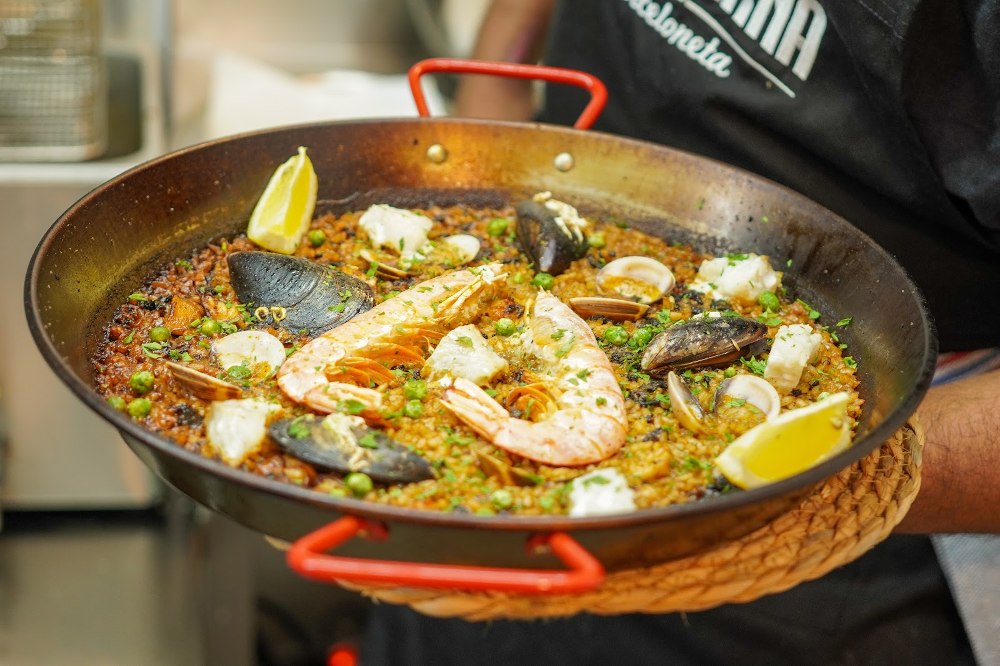

Paellas con su punto de socarrat, fideuà, la famosa bomba de pulpo y una gran variedad de tapas. Producto fresco, cocina cuidada y un equipo que te trata de 11 sobre 10.Paellas with the perfect socarrat, fideuà, the famous octopus "bomba" and a wide range of tapas. Fresh produce, careful cooking and a team that treats you 11 out of 10.
A dos pasos de la playa de la Barceloneta, es el sitio para sentarse, pedir arroz para compartir y dejar que la tarde se alargue. 4,8 estrellas dicen que no somos los únicos que lo pensamos.Two steps from Barceloneta beach, it's the place to sit down, order rice to share and let the afternoon stretch out. 4.8 stars say we're not the only ones who think so.
